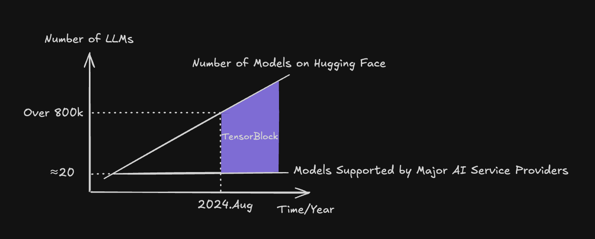
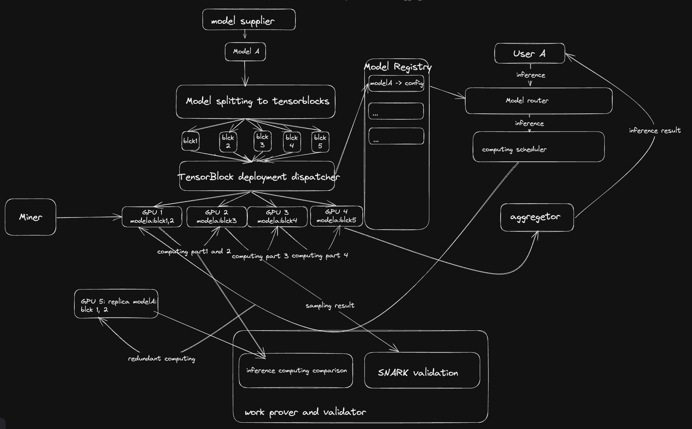

What is TensorBlock?
TensorBlock is the decentralized AI blockchain platform for Self-Organizing Intelligence. We are building a protocol designed to achieve the following; (1) Generate revenue for model providers. (2) Enable low-cost, stable, and distributed deployment of a broader range of AI models. (3) Unleash the diversity of LLMs. (4) Leverage idle GPU resources.
Why TensorBlock?
AI inference today resembles the early days of distributed systems. While machines can now connect to networks with ease, the robust software framework necessary to coordinate them for distributed tasks is still missing. TensorBlock is here to fill that gap. Our platform supports all model deployment and inference tasks, unleashing the diversity of large language models (LLMs) and accelerating the arrival of AGI.

We believe open-source LLMs are the endgame. Just as Linux has become the dominant OS for servers and serves as the foundation for Android, we envision open-source as the future of AI.
Our mission is to incentivize people to contribute their resources. We’re starting with GPUs, but we’ll eventually unlock even more, including residential IPs, bandwidth, CPU, RAM, and storage.
We believe diversity drives evolution. There are countless exceptional models on Hugging Face, but they’re not truly alive. TensorBlock brings them to life.
How TensorBlock Achieve This?
We believe that the true catalyst for the AI productivity revolution lies in organizational innovation. Within the TensorBlock ecosystem, three key players drive this innovation: Model Providers (suppliers/AI developers), Miners (GPU holders), and AI Users.

Miners: contribute their idle computing resources in exchange for rewards.
Model Providers: are compensated for sharing their models, with higher rewards for models that see greater usage.
AI Users: gain access to a broader variety of models at a lower cost.
The organizational innovation within TensorBlock’s AI ecosystem is not just a financial mechanism; it’s a reimagining of human relationships within the AI development process. This innovation fosters new collaboration mechanisms, making AI development more inclusive and diverse. This is the core purpose of TensorBlock’s existence.